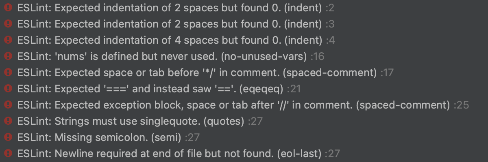

While coding standards can be seen as quite trivial in some circles, code without coding standards is complained about by almost every programmer out there. I’ve heard many a lamentation about how spacing is inconsistent in a file or how hard a program is to read. The absolute worst case was when I found that a stylesheet I had been given was all condensed into one line. With these experiences, I believe that coding standards are very useful and can even help in learning a programming language.
Recently I’ve started using ESLint for Javascript, and I quite enjoy it. ESLint is a coding standard that catches style errors according to its guidelines. Missing semicolon, incorrect indentation, unused variables, and many more are alerted by ESLint and demands you correct them. Achieving the green checkmark on the top right corner of the IDE was a mandatory deed that often involved tapping the spacebar or delete key repeatedly until the red squiggly lines disappeared.
Many of my classmates have most of their problems with how nitpicky ESLint is with spacing. Spacing has no impact on the overall performance of the program! In some cases, neither do semicolons in Javascript! And yet ESLint gets so mad about these minute details that just do not matter, from a certain point of view. So why do I say that coding standards like ESLint are important, and why do I enjoy it?
One word: Readability.
I am not a person who is good with large blocks of text, especially with textbooks. There’s simply too much in one place! Readability is very important to me and I would enjoy learning something so much more if the content was easy to read. Proper spacing, consistent capitalization, and fitting punctuation!
See, while correcting syntax errors improves the performance of the program, correcting style errors improves the performance of the programmers. Coding languages is already technically a whole new language to learn, why make it harder than it should be? Applying the proper spacing can allow programmers to understand and work with the code faster. Indentation indicates where a block of code belongs and is also a good way of demarcating sections of code down to their components.
In fact, I think indentation teaches learners of code what is essentially the crux of programming: Breaking the problem down into smaller problems. Take, for example, this very simple function that converts temperatures:
function temperatureConverter(temperature, temperatureType) {
if (temperatureType === "F") {
return (temperature - 32) * 5/9;
} else if (temperatureType == "C") {
return (temperature * 9/5) + 32;
}
return "Illegal temperature type";
}
We break the problem of “How do we convert from one temperature to another?” down to “How do we convert Fahrenheit to Celsius?” and “How do we convert Celsius to Fahrenheit?” While the first question was looser, the other two questions are more concrete and easier to answer. We have just broken down our one big problem into two smaller problems. The answers are then indicated by the indentation within the if statements; it’s evident which are answers and which answers belong to which question.
This use of negative space is key to understanding the structure of any kind of programming. Instead of searching for brackets that may be 25 lines above the snippet of code you’re interested in, indentation and spacing mark out your position within a program.
There is much more to discuss about ESLint and coding standards playing a role in learning code, but this is just an example that I enjoy the most about what ESLint enforces. What can I say? I’m partial to anything that doesn’t wreck my sanity.